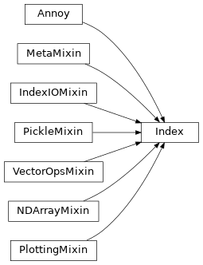
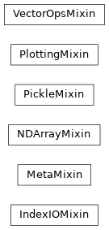

Annoy Index class Inheritance Diagrams (MRO)#
This page shows the class inheritance structure for the Annoy backend and the
high-level Index facade class, using Sphinx’s built-in
inheritance diagram support (the same approach used in Matplotlib’s docs).
Index + mixins#

Reading this diagram
Mixins only (independence + MRO scan)#
This diagram focuses only on the mixins so you can quickly confirm there is no unexpected inheritance between mixins (they should be independent).

Notes and Limitations#
Inheritance diagrams show class derivation, but they do not show composition
relationships (e.g., an optional self._annoy backend attribute). For composition
support, refer to the “glue” helpers documented elsewhere (e.g., backend_for(self),
lock_for(self)).
An inheritance diagram shows “parent → child” class relationships.
It helps you understand which class extends another class.
Sphinx can render inheritance diagrams using the built-in extension
sphinx.ext.inheritance_diagram. The diagram is rendered using Graphviz
(the dot tool), so Graphviz must be available in your build environment.
Note
In your conf.py:
extensions += ["sphinx.ext.inheritance_diagram"]
See Also#
Graphviz (
dot) documentation